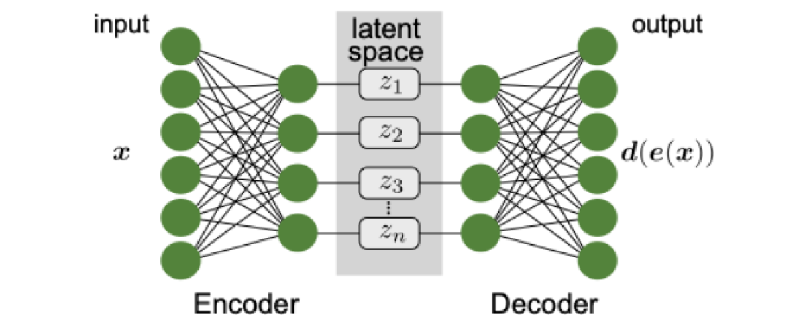
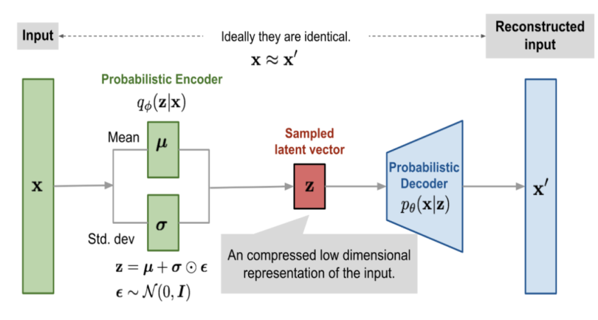

Understanding Variational Autoencoders: What They Are and How They Work#
Understanding Variational Autoencoders: What They Are and How They Work#
What Are Variational Autoencoders (VAEs)?#
To grasp the concept of Variational Autoencoders (VAEs), it is essential first to understand traditional autoencoders.
Autoencoders#
Autoencoders serve as the fundamental mechanism for learning a compressed representation of the input data and then reconstructing it back from this representation. First introduced in the 1980’s, autoencoders were advanced in
This process serves several key purposes:
Dimensionality Reduction: By encoding the input data into a lower-dimensional latent space, autoencoders effectively reduce the dimensionality of the data. This reduction is valuable for tasks where the high dimensionality of the input data makes analysis, visualization, or storage challenging.
Feature Extraction: During the encoding phase, autoencoders learn to extract and capture the most salient features or patterns present in the input data. These features are represented in the latent space and can be used for downstream tasks such as classification, clustering, or anomaly detection.
Data Compression: The encoded representation of the input data typically occupies less space than the original data. This compression is beneficial for efficient storage, transmission, or processing of data, especially in scenarios with limited resources or bandwidth constraints.
Noise Reduction: Autoencoders can learn to filter out noise or irrelevant information present in the input data during the reconstruction phase. By reconstructing the data from the encoded representation, autoencoders aim to produce outputs that closely resemble the original inputs while minimizing noise or distortion.
Generative Modeling: In addition to compression and reconstruction, some variants of autoencoders, such as variational autoencoders (VAEs), can generate new data points by sampling from the learned latent space. This generative capability enables tasks such as data synthesis, augmentation, or creative content generation.
Overall, autoencoders enable models to learn meaningful representations of the input data, facilitating various tasks in unsupervised learning, representation learning, and generative modeling.
Autoencoders are a class of neural network architectures primarily used for unsupervised learning tasks. They consist of two main components: an encoder and a decoder.
Encoder: The encoder is responsible for transforming the input data into a compressed representation, often referred to as the latent space or latent variables. This transformation involves mapping the input data from its original high-dimensional space to a lower-dimensional representation. Each layer in the encoder learns increasingly abstract and compact representations of the input data.
Decoder: The decoder complements the encoder by reconstructing the original input data from the compressed representation generated by the encoder. It takes the compressed representation as input and maps it back to the original high-dimensional space. The decoder aims to produce outputs that closely resemble the inputs, effectively reconstructing the data.
The process of training an autoencoder involves minimizing the reconstruction error between the input data and its reconstructed version. This is typically achieved by optimizing a loss function that measures the discrepancy between the input and output data.

In Figure 1, the input data 𝑥 undergoes encoding through the encoder, resulting in a compressed representation 𝑧. This compressed representation is then decoded by the decoder to reconstruct the output
which ideally closely resembles the original input 𝑥.
Autoencoders are versatile models with various applications, including dimensionality reduction, feature learning, denoising, and anomaly detection. Their ability to learn compact representations of data without the need for labeled examples makes them particularly useful for tasks where labeled data is scarce or unavailable.
Variational Autoencoders#
Variational autoencoders (VAEs) expand upon the basic autoencoder architecture by incorporating probabilistic principles into the encoding process. They offer a more sophisticated approach to learning compressed representations of data and generating new data points.
VAEs maintain the fundamental structure of autoencoders, consisting of an encoder and a decoder. However, they diverge in how the encoder handles the encoding process:
Probabilistic Mapping in Encoder: In VAEs, the encoder maps the input data to a probability distribution over the latent space instead of directly encoding it into a fixed latent representation. Specifically, instead of outputting a single point in the latent space, the encoder outputs the parameters of a probability distribution, typically a Gaussian distribution, representing the mean (𝜇μ) and variance (𝜎2σ2) of the distribution.
Latent Space Regularization: VAEs incorporate latent space regularization to encourage the learned latent space to approximate a predefined distribution, often a standard normal distribution. This regularization, typically achieved through the Kullback-Leibler (KL) divergence term, ensures that the latent representations are well-behaved and smoothly distributed.
The probabilistic encoding in VAEs not only enables them to learn compressed representations but also facilitates the generation of new data points by sampling from the learned distribution in the latent space. This generative capability distinguishes VAEs from traditional autoencoders.

In Figure 2, the input data 𝑥 is encoded into a probability distribution characterized by mean (𝜇) and variance \((\sigma^{2})\) by the encoder. The decoder then reconstructs the output \((x)\) from a sample drawn from \(p_{\theta}(x|z)\).